# If you need to install new packages, here are code hidden in the comments.
#install.packages("tsibble")
#remotes::install_github("tidyverts/feasts")
# Load libraries
library(tidyverse)
library(lubridate) # for converting dates and time
library(lterdatasampler) # for accessing ecological data
library(tsibble) # to tidy temporal data with wrangling tools
library(feasts) # extension of tsibble to produce time series features, decompositions, statistical summaries and convenient visualisations.
library(broom)7 OPTIONAL - Time Series
Week 7 - Cleaning and plotting time series data
This is an optional tutorial if you plan to work with data that is time dependent, i.e time series data.
Note
THIS TUTORIAL WILL NOT BE IN THE EXAM. It is an optional extra learning tool.
This tutorial contains examples from longitudinal survey data (i.e surveying across time), weather data (date-based and date-time-based), and recordings of age data to look at growth over time.
To work with data with dates and time, we will need the R package lubridate. Some of the turorials require more specialised packages to easily plot and work with time series data such as tsibble and feasts.
lubridate
All of example data in this tutorial have been pre-cleaned. Let’s say for example, you loaded your raw data from a csv file, the date column is often stored as character. In this example, date is formatted as year-month-day, so to convert character to date format, use this following code with the ymd() function.
# Use example dataset and only keep the date and temperature
test_data <- luq_streamchem %>%
select(sample_date, temp)
# convert character to date
test_data <- test_data %>%
dplyr::mutate(sample_date = lubridate::ymd(sample_date))lubridate can handle many formats, but how you format them depends on how the original dates are written.
dmy("05-01-1987") # day-month-year[1] "1987-01-05"mdy("01/05/1987") # month-day-year[1] "1987-01-05"ymd_hms("1987-01-05 14:30:00") # date + time[1] "1987-01-05 14:30:00 UTC"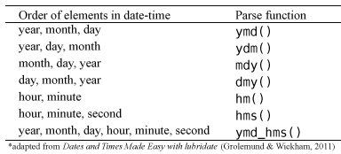
You can also break down the dates into useful variables:
test_data <- test_data %>%
mutate(
year = lubridate::year(sample_date), # extract year only
month = lubridate::month(sample_date), # extract month only as numeric
month_lab = lubridate::month(sample_date, label = TRUE), # extract month only as labels (Jan, Feb, Mar)
doy = lubridate::yday(sample_date), # day of year
week = lubridate::isoweek(sample_date) # present week as Monday, Tuesday, Wednesday et al.
)Some ecological time series have uneven sampling. You can check if the dates are evenly spaced out by the time difference with a lag of one using the lag() function.
test_data %>%
arrange(sample_date) %>%
mutate(time_diff = sample_date - lag(sample_date))# A tibble: 317 × 8
sample_date temp year month month_lab doy week time_diff
<date> <dbl> <dbl> <dbl> <ord> <dbl> <dbl> <drtn>
1 1987-01-05 20 1987 1 Jan 5 2 NA days
2 1987-01-13 20 1987 1 Jan 13 3 8 days
3 1987-01-20 20 1987 1 Jan 20 4 7 days
4 1987-01-27 20 1987 1 Jan 27 5 7 days
5 1987-02-03 20 1987 2 Feb 34 6 7 days
6 1987-02-10 20 1987 2 Feb 41 7 7 days
7 1987-02-17 20 1987 2 Feb 48 8 7 days
8 1987-02-24 19 1987 2 Feb 55 9 7 days
9 1987-03-03 20 1987 3 Mar 62 10 7 days
10 1987-03-10 20 1987 3 Mar 69 11 7 days
# ℹ 307 more rowsThis helps identify missing sampling periods or inconsistent effort.
Examples
Many of you working in consultancy or academic research will need to conduct experiments or surveys in the same location/animal across time. This can be days, weeks, months, or over multiple years. While there are specific models that explicitly deal with time-series data, here you will learn how to clean and plot time-series data.
In this first example, We will use the luq_streamchem data to illustrate how to handle and plot longtitudinal survey data from the lterdatasampler R package. This part will teach you how to explore change points in time-series, and how to use long format to create facet plots.
Background
The luq_streamchem data sample contains a subset of stream flow chemistry data for the Quebrada Sonadora (QS) site within the Espiritu Santo drainage basin and the El Verde Research area of the Luquillo Experimental Forest (LEF). The Luquillo Experimental Forest (LEF) has been a center of tropical forestry research for nearly a century. In addition, the LEF is a recreation site for over a half a million people per year, a water supply for approximately 20% of Puerto Rico’s population, a regional center for electronic communication, and a refuge of Caribbean biodiversity. QS is the high elevation site.

First check what the data contains with glimpse().
# see luq_streamchem
glimpse(luq_streamchem)Rows: 317
Columns: 22
$ sample_id <chr> "QS", "QS", "QS", "QS", "QS", "QS", "QS", "QS", "QS", "QS"…
$ sample_date <date> 1987-01-05, 1987-01-13, 1987-01-20, 1987-01-27, 1987-02-0…
$ gage_ht <dbl> 2.82, 2.66, 2.61, 2.58, 2.80, 2.63, 2.84, 2.68, 2.76, 2.64…
$ temp <dbl> 20, 20, 20, 20, 20, 20, 20, 19, 20, 20, 19, 21, 20, 21, 21…
$ p_h <dbl> 7.22, 7.34, 7.12, 7.19, 7.36, 7.19, NA, 6.93, 7.02, 7.17, …
$ cond <dbl> 48.2, 49.8, 50.3, 50.4, 49.6, 53.3, 43.7, 48.4, 48.4, 49.9…
$ cl <dbl> 7.30, 7.50, 7.50, 7.30, 7.30, 7.20, 7.00, 7.30, 7.60, 7.30…
$ no3_n <dbl> 97, 114, 115, 117, 103, 110, 94, 90, 86, 97, 218, 71, 83, …
$ so4_s <dbl> 0.52, 0.73, NA, NA, 0.85, NA, NA, NA, NA, NA, NA, NA, NA, …
$ na <dbl> 4.75, 4.81, 5.19, 5.08, 4.86, 5.11, 4.80, 5.08, 4.90, 4.89…
$ k <dbl> 0.18, 0.19, 0.20, 0.18, 0.17, 0.18, 0.17, 0.18, 0.20, 0.20…
$ mg <dbl> 1.50, 1.58, 1.66, 1.64, 1.49, 1.59, 1.44, 1.60, 1.64, 1.51…
$ ca <dbl> 2.46, 6.53, 2.60, 2.67, 2.39, 2.55, 2.33, 2.48, 2.55, 2.81…
$ nh4_n <dbl> 14, 20, 25, 30, 25, 30, 7, 6, NA, NA, NA, NA, NA, NA, 7, 1…
$ po4_p <dbl> NA, NA, NA, NA, NA, NA, NA, NA, NA, NA, NA, NA, NA, NA, NA…
$ doc <dbl> 0.72, 0.74, 0.69, 0.62, 0.75, 0.61, 1.78, 1.85, 1.49, 1.29…
$ dic <dbl> 3.37, 3.35, 4.42, 3.30, 5.03, 4.18, 2.40, 2.90, 2.46, 3.34…
$ tdn <dbl> NA, NA, NA, NA, NA, NA, NA, NA, NA, NA, NA, NA, NA, NA, NA…
$ tdp <dbl> NA, NA, NA, NA, NA, NA, NA, NA, NA, NA, NA, NA, NA, NA, NA…
$ si_o2 <dbl> 11.8, 12.2, 12.5, 12.4, 10.9, 12.2, 11.1, 12.5, 11.8, 12.3…
$ don <dbl> NA, NA, NA, NA, NA, NA, NA, NA, NA, NA, NA, NA, NA, NA, NA…
$ tss <dbl> 2.30, 0.72, 1.05, 1.05, 1.60, 1.32, 1.23, 1.18, 1.20, 0.96…Note, this dataset has already been cleaned and so the date column is already in the correct format.
Plotting one chemical
Let’s look at the time-series of one of the chemicals, potassium
ggplot(data = luq_streamchem, aes(x = sample_date, y = k)) +
geom_line(color="#e82c4a") +
xlab("") +
theme_bw() +
labs(title = "Potassium [mg/L]") 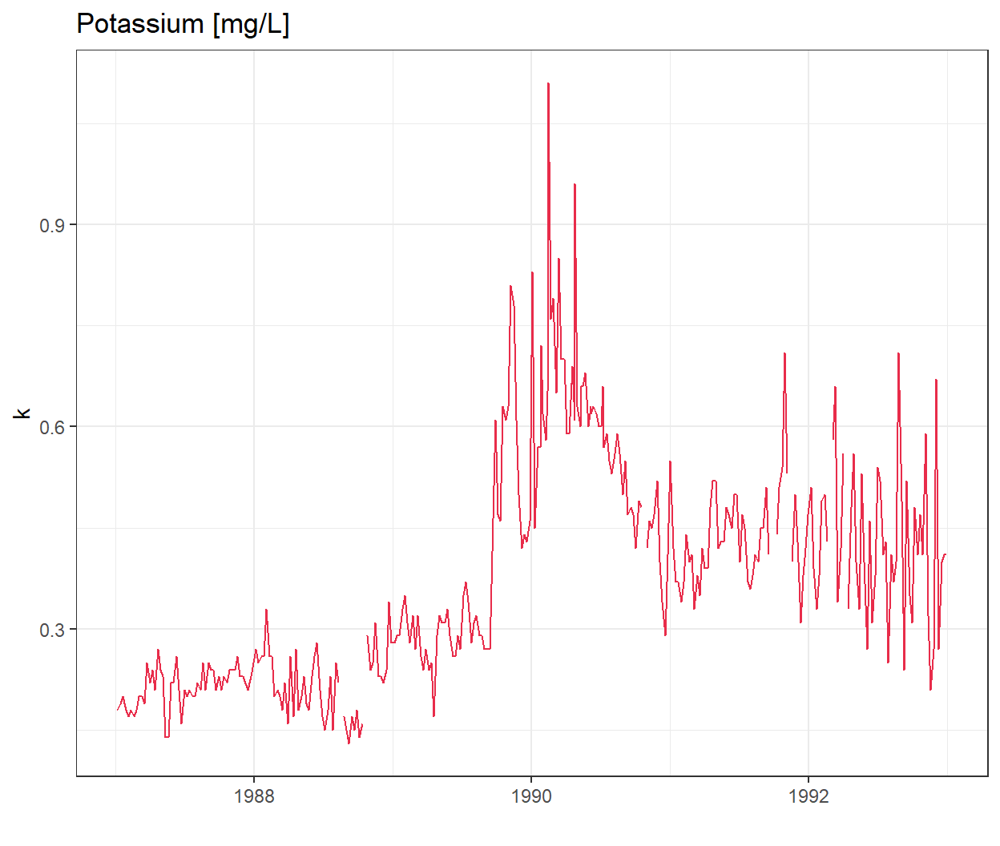
Wow there is definitely something going on at the end of 1989!
Plotting all water quality indicators
We are not sure if all the chemicals and water quality indicators have been monitored over the same time period, or if their value will also show strong variations at the end of 1989.To explore this we will transform our data frame into long format so we can use ggplot2::facet_wrap() to quickly plot all observed stream chemistry variables at once. Note we are using the scales = free option since the concentrations (and units) vary greatly among the different variables.
# Switching to long format
luq_streamchem_long <- luq_streamchem %>%
pivot_longer(cols = -c(sample_id, sample_date), names_to = "chem_param")
ggplot(luq_streamchem_long, aes(sample_date, value)) +
geom_line(color = "#e82c4a") +
theme_bw() +
facet_wrap(vars(chem_param), scales = "free")Warning: Removed 1462 rows containing missing values or values outside the scale range
(`geom_line()`).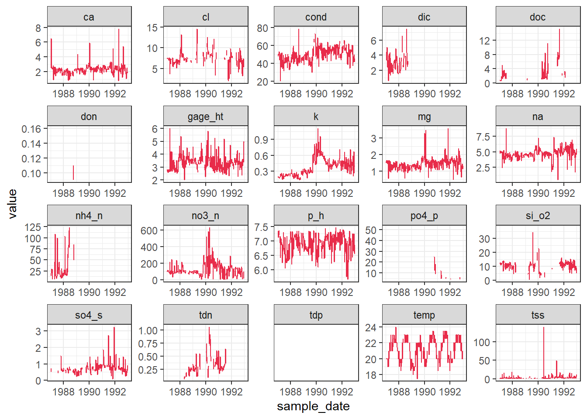
It seems that other chemicals are also showing a jump around the end of 1989. Actually those jumps are due to Hurricane Hugo which made landfall in Puerto Rico at the beginning of September 1989. In its aftermath, average stream water exports of potassium, nitrate and ammonium increased in the year after the landfall by 119, 182 and 102% respectively compared to the other years of record.
Detecting change points in a time-series
Let’s first confirm that the timing of the jump in the time-series corresponds to Hurricane Hugo by adding a vertical line at the date of hurricane landfall.
ggplot(luq_streamchem, aes(x = sample_date, y = k)) +
geom_line(color = "#e82c4a") +
geom_vline(xintercept = as.Date("1989-09-18"),
linetype = "dashed") +
xlab("") +
theme_bw() +
labs(title = "Potassium [mg/L]") 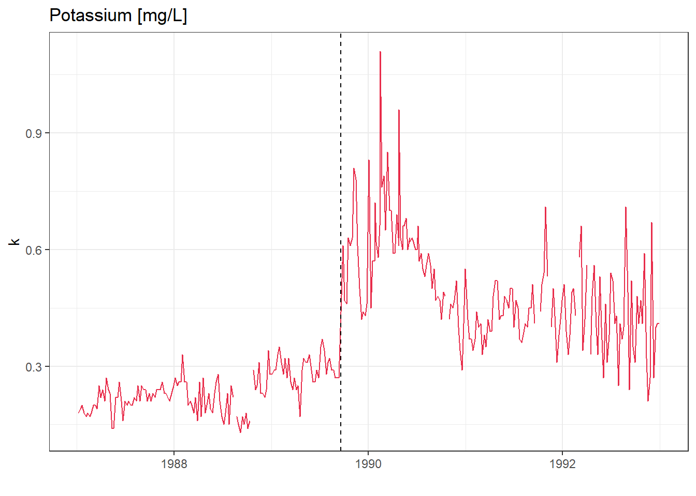
What could be next
There are many R packages available to help to detect change points in a time series: changepoint, CPM, BCP, ECP and more! Try to use them on this data sample.
We will use the arc_weather data to illustrate how to handle and plot weather data from the lterdatasampler R package.
Background
The arc_weather data sample contains selected meteorological records from the Toolik Field Station at Toolik Lake, Alaska, from 1988 - 2018. This data set offers opportunities to explore and wrangle time series data, visualize patterns (e.g. seasonality), and apply different forecasting methods.

Data exploration
Here, we highlight daily air temperature (the data sample also contains records for precipitation and wind speed) using functions from the tsibble and feasts R packages (both part of the fantastic tidyverts ecosystem of “tidy tools for time series”).
Let’s calcuate the monthly average of daily mean air temperature which we will call the new object as arc_weather_ts.
# see arc_weather
glimpse(arc_weather)Rows: 11,171
Columns: 5
$ date <date> 1988-06-01, 1988-06-02, 1988-06-03, 1988-06-04, 1988-0…
$ station <chr> "Toolik Field Station", "Toolik Field Station", "Toolik…
$ mean_airtemp <dbl> 8.4, 6.0, 5.8, 1.8, 6.8, 5.2, 2.2, 9.4, 13.1, 17.7, 13.…
$ daily_precip <dbl> 0.0, 0.0, 0.0, 0.0, 2.5, 0.0, 7.6, 0.0, 0.0, 0.0, 11.4,…
$ mean_windspeed <dbl> NA, NA, NA, NA, NA, NA, NA, NA, NA, 3.9, 2.2, 2.4, 2.2,…# dmy_hm function converts format of year/month/day hour:minute which is the what the logger recorded
arc_weather <- arc_weather %>%
dplyr::mutate(date = lubridate::ymd(date))
# Calculate monthly average of daily mean air temperature and convert to tsibble:
arc_weather_ts <- arc_weather %>%
dplyr::mutate(yr_mo = yearmonth(date)) %>% # Make a column with just month and year from each date
group_by(yr_mo) %>% # Group by year-month
summarise(avg_mean_airtemp = mean(mean_airtemp, na.rm = TRUE)) %>% # Find monthly mean air temperature
tsibble::as_tsibble(index = yr_mo) # Convert to a tsibble (time series tibble)Once the data are converted into a tsibble in the last line above, we can use helpful functions in feasts (like autoplot() and gg_season()) to explore the time series data a bit more.
# Create a line graph of monthly average of mean daily air temperatures:
arc_weather_ts %>%
autoplot(avg_mean_airtemp) +
theme_bw()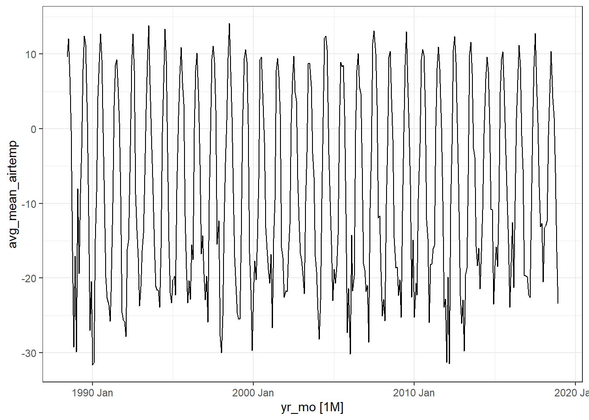
Note
Ignore the warning message below. It’s just saying that gg_season() is no longer maintained.
Warning: gg_season() was deprecated in feasts 0.4.2. ℹ Please use ggtime::gg_season() instead. ℹ Graphics functions have been moved to the {ggtime} package. Please uselibrary(ggtime) instead.
# Create season plot to explore seasonality:
arc_weather_ts %>%
feasts::gg_season(avg_mean_airtemp) +
theme_bw()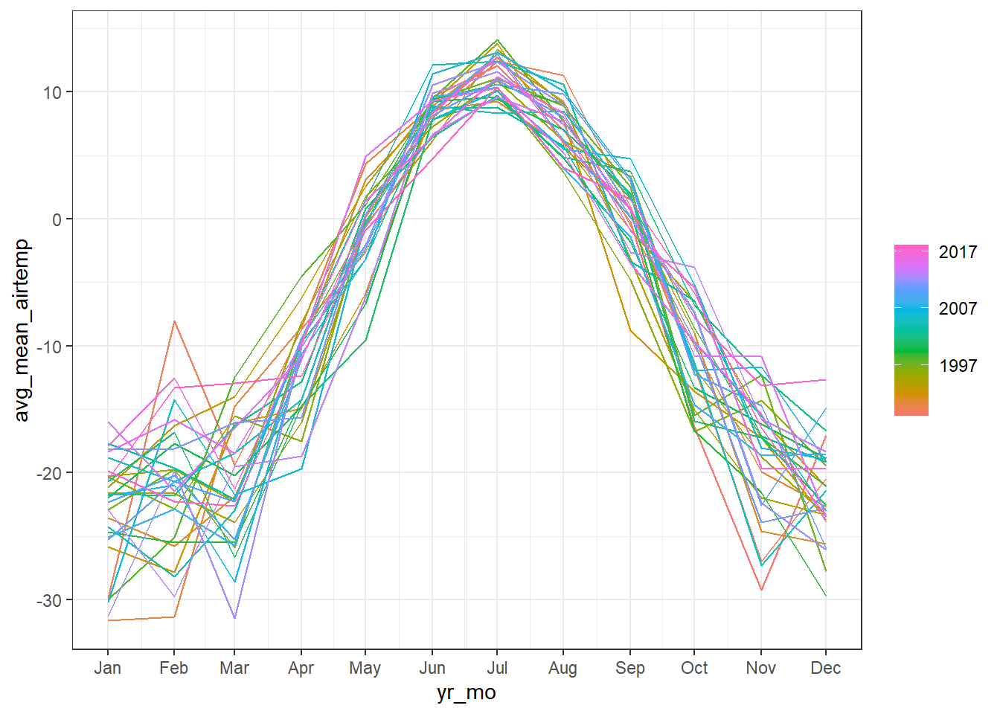
Decompose
We might want to decompose the time series data to further explore components. See Chapter 3 Time series decomposition in Forecasting: Principles and Practice by Rob J Hyndman and George Athanasopoulos for more information on decomposing time series data.
Note, you can also do this by site or grouping which the feasts R package provides from examples.
arc_weather_ts %>%
model(feasts::STL(avg_mean_airtemp)) %>%
components() %>%
autoplot() +
theme_bw()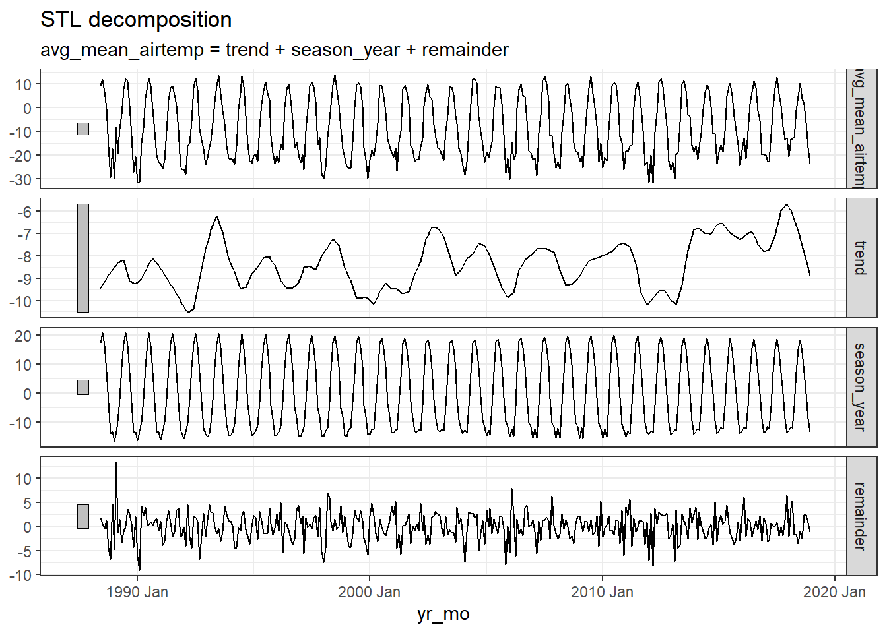
Note
Ignore the warning message below. It’s just saying that autoplot.dcmp_ts() is no longer maintained.
Warning: autoplot.dcmp_ts() was deprecated in fabletools 0.6.0. ℹ Please use ggtime::autoplot.dcmp_ts() instead. ℹ Graphics functions have been moved to the {ggtime} package. Please uselibrary(ggtime) instead.
The first plot shows the raw data from the
arc_weather_tsdataset.The second plot shows the trend, which excludes the seasonality component. The trend generally shows how the average change over time, which is useful for climate change studies. Here the trend does not seem to be increasing or decreasing over time.
The third plot shows the seasonality, which excludes the trend component. There is a clear seasonal trend in air temperature (regular cycle).
The last plot shows the remainder component, which demonstrates that the seasonality and trend alone cannot capture all of the variation in the observations over time. The more wiggly the lines, the greater the variation in the time series.
We can also explore autocorrelation, which refers to the degree of similarity between A) a given time series, and B) a lagged version of itself, over C) successive time intervals. In other words, autocorrelation is intended to measure the relationship between a variable’s present value and any past values that you may have access to.
arc_weather_ts %>%
ACF(avg_mean_airtemp) %>%
autoplot() +
theme_bw()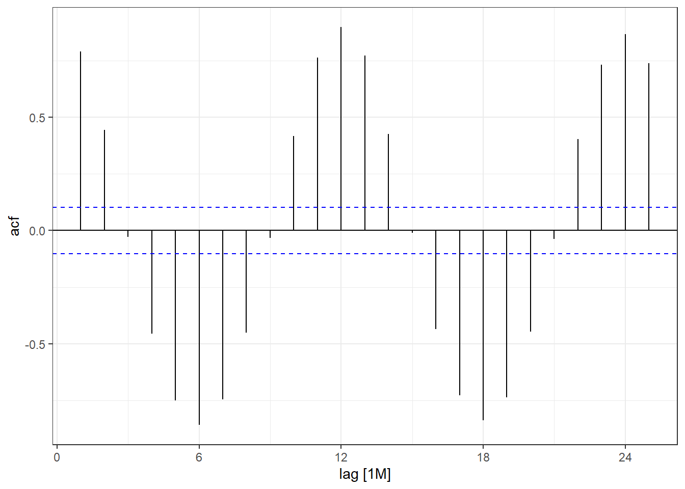
Note
Ignore the warning message below. It’s just saying that autoplot.dcmp_ts() is no longer maintained.
Warning: autoplot.tbl_cf() was deprecated in feasts 0.4.2. ℹ Please use ggtime::autoplot.tbl_cf() instead. ℹ Graphics functions have been moved to the {ggtime} package. Please uselibrary(ggtime) instead.
You can see there is a lag of 6 months with the largest acf value occuring every 6 months. Then you can move on to time series forecasting and further analysis!
Some examples of autocorrelation trends what what they mean:


For visualisation, this ACF is not important, but if you are analysing data with strong autocorrelation, not dealing with it violates the independence assumption of regression models, specifically Ordinary Least Squares (OLS). While estimates remain unbiased, it makes them inefficient and produces underestimated standard errors, leading to unreliable p-values, misleading significance tests, and invalid confidence intervals.
You can deal with autocorrelation by adding lagged variables in the regression model to capture the dependency on past values, or using time series models that uses techniques like ARIMA (AutoRegressive Integrated Moving Average) that explicitly handle autocorrelation.
Many of you might be working with environmental data (e.g. soil or air temperatures and humidity) collected from deployed data loggers. While, you may not not use the whole time series dataset for your study, it could useful to visualise the study period and highlight where you took your samples (e.g. using geom_vline().
Here is a dataset called winter_clim_dat.csv that includes outside (EXT) and inside (DEEP) cave air temperature and humidity of two sites (MAM, YES). This dataset contains date and time components, which include recordings of temperature and humidity every hour. You can create a figure like this using the geom_line() function and separating temperature and humidity by location (EXT, DEEP) and site (MAM, YES).
The code below also includes ways of converting raw date values into meaningful values that R can interpret correctly. Here the date is formatted as day/month/year hour:minute so we need to use the dmy_hm() function from the lubridate package.
You can also change the dates and time with as.POSIXct() function). The link also discusses ways of dealing with missing and weird time series data.

# lubridate way
clim_raw <- read_csv("https://raw.githubusercontent.com/nicholaswunz/ECS200-Workshop/refs/heads/main/data/winter_clim_dat.csv") %>%
dplyr::mutate(date_time = lubridate::dmy_hm(date_time), # convert character to date and time
DOY = lubridate::yday(date_time), # calculate day of the year
month = lubridate::month(date_time), # month as numeric
month_cat = lubridate::month(date_time, label = TRUE), # month as name
location = factor(location, levels = c('EXT', 'DEEP')))
# using base R way with as.Date and as.POSIXlt
clim_raw <- read_csv("https://raw.githubusercontent.com/nicholaswunz/ECS200-Workshop/refs/heads/main/data/winter_clim_dat.csv") %>%
dplyr::mutate(date_time = as.POSIXct(date_time, format = "%d/%m/%Y %H:%M"), # convert character to date and time
DOY = as.POSIXlt(date_time)$yday, # calculate day of the year
month = format(as.Date(date_time, format = "%m/%d/%Y"),"%m"), # month as numeric
month_cat = format(as.Date(date_time, format = "%m/%d/%Y"),"%B"), # month as name
location = factor(location, levels = c('EXT', 'DEEP'))) Plot temperature and humidity by sites with vertical lines representing survey period.
# Plot temperature with vertical lines representing survey period
temp_plot <- clim_raw %>%
ggplot() +
geom_line(aes(x = date_time, y = air_temp, colour = location)) +
scale_colour_manual(values = c("#F5C4B8", "#e82c4a")) + # manually change colour
geom_vline(xintercept = as.POSIXct(as.Date("2023-07-10")), # add horizontal line when data were sampled
linetype = "dashed") +
geom_vline(xintercept = as.POSIXct(as.Date("2023-08-12")),
linetype = "dashed") +
labs(x = "Date",
y = "Air temperature (°C)") +
theme_bw() +
facet_wrap(~ site) # separate by site
# Plot humidity with vertical lines representing survey period
RH_plot <- clim_raw %>%
ggplot() +
geom_line(aes(x = date_time, y = RH, colour = location)) +
scale_colour_manual(values = c("#B8CEF5", "darkblue")) + # manually change colour
geom_vline(xintercept = as.POSIXct(as.Date("2023-07-10")), # add horizontal line when data were sampled
linetype = "dashed") +
geom_vline(xintercept = as.POSIXct(as.Date("2023-08-12")),
linetype = "dashed") +
labs(x = "Date",
y = "Relative humidity (%)") +
theme_bw() +
facet_wrap(~ site) # separate by site
cowplot::plot_grid(temp_plot,
RH_plot,
ncol = 1, align = "v")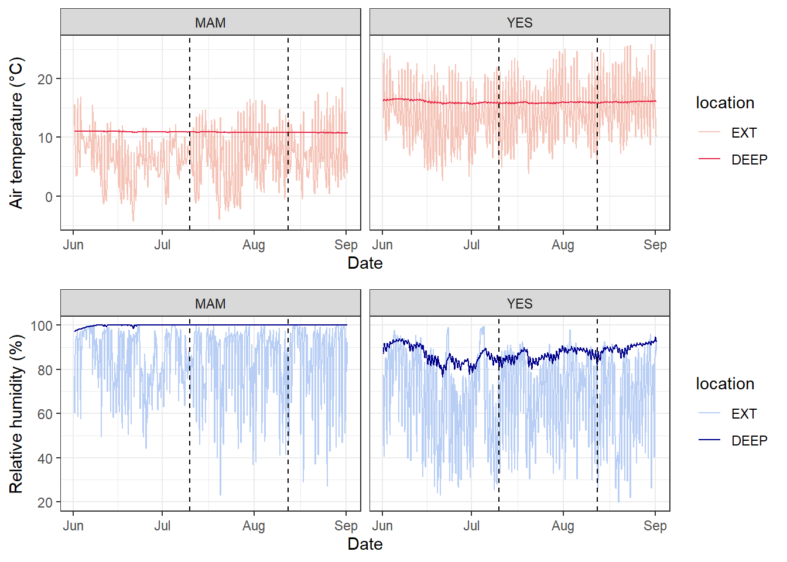
We will use the knz_bison data to illustrate how to handle and plot growth data from the lterdatasampler R package.
Background
The knz_bison data provides age and weight records for the bison herd at Konza Prairie Biological Station LTER (KPBS) in Kansas. Here, we will show you how to model bison weight as a function of age using the Gompertz model with nls.
From Konza Prairie LTER Researcher Jeffrey Taylor: “Nearly 300 bison graze KPBS year-round without supplementary feed and with minimal human intervention, living as ‘naturally’ as possible. Bison were reintroduced in 1987, and collection of weight data began in 1994, making this dataset the longest continuous record of wild ungulate weight gain anywhere in the world. A round-up is conducted once annually at the end of the grazing season wherein each bison is weighed, calves are vaccinated and receive unique IDs, and excess individuals are culled.”

Let’s take a look at the existing knz_bison data sample:
glimpse(knz_bison)Rows: 8,325
Columns: 8
$ data_code <chr> "CBH01", "CBH01", "CBH01", "CBH01", "CBH01", "CBH01", "C…
$ rec_year <dbl> 1994, 1994, 1994, 1994, 1994, 1994, 1994, 1994, 1994, 19…
$ rec_month <dbl> 11, 11, 11, 11, 11, 11, 11, 11, 11, 11, 11, 11, 11, 11, …
$ rec_day <dbl> 8, 8, 8, 8, 8, 8, 8, 8, 8, 8, 8, 8, 8, 8, 8, 8, 8, 8, 8,…
$ animal_code <chr> "813", "834", "B-301", "B-402", "B-403", "B-502", "B-503…
$ animal_sex <chr> "F", "F", "F", "F", "F", "F", "F", "F", "F", "F", "F", "…
$ animal_weight <dbl> 890, 1074, 1060, 989, 1062, 978, 1068, 1024, 978, 1188, …
$ animal_yob <dbl> 1981, 1983, 1983, 1984, 1984, 1985, 1985, 1985, 1986, 19…We can calculate each bison’s age at observation by subtracting the year of birth (animal_yob) from the record year (rec_year), adding a new column called animal_age using dplyr::mutate():
knz_bison_age <- knz_bison %>%
mutate(animal_age = rec_year - animal_yob)Now, we’ll explore bison weight as a function of age (in years), separated by sex:
# Either dot points
ggplot(data = knz_bison_age, aes(x = animal_age, y = animal_weight, group = animal_sex)) +
geom_point(aes(color = animal_sex),
size = 0.5,
position = position_jitter(width = 0.2, height = 0)) +
labs(x = "Bison age (years)",
y = "Recorded weight (pounds)") +
theme_bw()Warning: Removed 252 rows containing missing values or values outside the scale range
(`geom_point()`).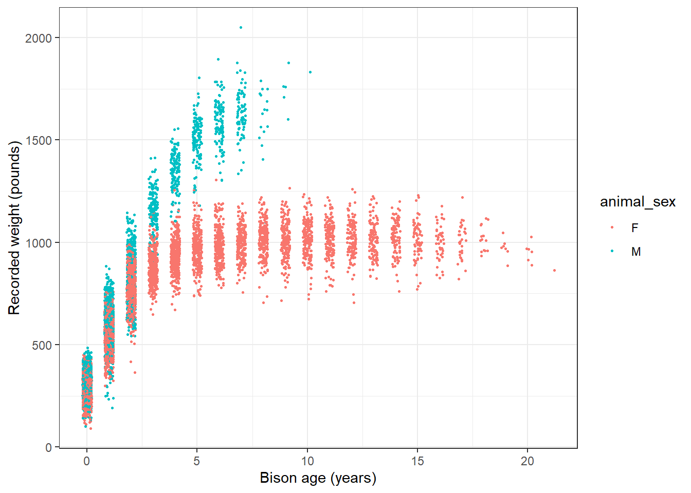
# or line plot
ggplot(data = knz_bison_age, aes(x = animal_age, y = animal_weight, group = animal_code)) +
geom_line(aes(color = animal_sex), alpha = 0.5) +
labs(x = "Bison age (years)",
y = "Recorded weight (pounds)") +
theme_bw()Warning: Removed 252 rows containing missing values or values outside the scale range
(`geom_line()`).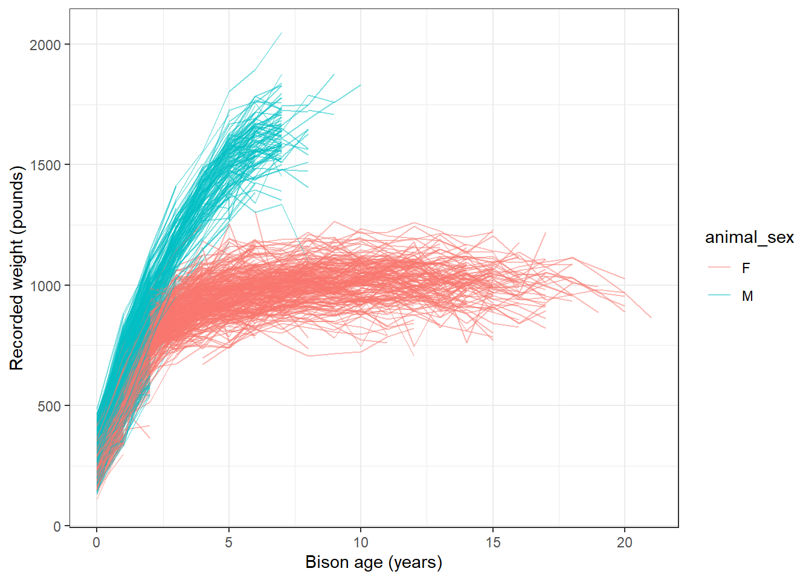
Gompertz model
As used by Martin and Barboza (2020), bison body mass as a function of age can be modelled using a sex-specific Gompertz model:
\[BM =b1*exp(-exp(-b2*(age-b3)))\] Where \(b1\) is the asymptotic body mass (pounds), \(b2\) is instantaneous growth-rate at inflection point, and \(b3\) is age at inflection point (years).
Using nonlinear least squares (nls) to estimate \(b1\), \(b2\) and \(b3\) requires starting estimates for each. We will use the following (based on visualizations above, and estimates from Supplemental Materials for Martin and Barbosa (2020):
Female bison parameter initial estimates:
- \(b1\) initial estimate: 1000 pounds
- \(b2\) initial estimate: 1
- \(b3\) initial estimate: 0.6
Create the Gompertz model function:
gompertz <- function(b1, b2, b3, animal_age) {
b1*exp(-exp(-b2*(animal_age-b3)))
}Use nls() to model growth for female bison
Isolate just the female bison (note that this starts from the dataset knz_bison_age created above that contains the calculated bison age, stored as animal_age):
bison_f <- knz_bison_age %>%
filter(animal_sex == "F")Use nls to estimate parameters (note: add trace = TRUE to print iterative estimates):
bison_f_gompertz <- nls(animal_weight ~ gompertz(b1, b2, b3, animal_age),
data = bison_f,
start = list(b1 = 1000, b2 = 1, b3 = 0.6),
trace = TRUE)5.291715e+07 (7.61e-01): par = (1000 1 0.6)
3.442663e+07 (1.91e-01): par = (1007.201 0.6930941 0.3444975)
3.320797e+07 (7.02e-03): par = (1009.67 0.7250854 0.2798164)
3.320631e+07 (1.28e-04): par = (1009.764 0.727529 0.2832794)
3.320631e+07 (3.10e-06): par = (1009.756 0.7275973 0.2832921)Plot the predicted masses with the observed data
# Create a new series of ages
age_series <- seq(0, 22, by = 0.1)
# Make predictions using the model over those times:
pred <- predict(bison_f_gompertz, list(animal_age = age_series))
# Bind the predictions and age sequence together into a data frame:
bison_f_predicted <- data.frame(age_series, pred)
# Plot the observed data and predictions together:
ggplot() +
geom_point(data = bison_f,
aes(x = animal_age, y = animal_weight),
size = 0.3,
alpha = 0.2,
position = position_jitter(width = 0.2, height = 0)) +
geom_line(data = bison_f_predicted,
aes(x = age_series, y = pred),
color = "#e82c4a",
size = 1) +
theme_bw()Warning: Using `size` aesthetic for lines was deprecated in ggplot2 3.4.0.
ℹ Please use `linewidth` instead.Warning: Removed 236 rows containing missing values or values outside the scale range
(`geom_point()`).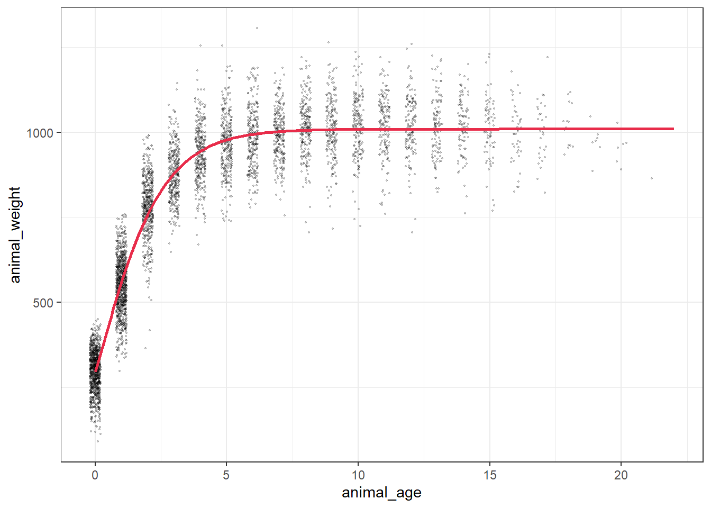
Explore & use model outputs with broom
The wonderful broom package “summarizes key information about models in tidy tibbles.” For example, the broom::tidy() function summarizes important model information:
# Put model outputs into a tidy tibble:
bison_f_gompertz_tidy <- bison_f_gompertz %>%
broom::tidy()
# Check it out!
bison_f_gompertz_tidy# A tibble: 3 × 5
term estimate std.error statistic p.value
<chr> <dbl> <dbl> <dbl> <dbl>
1 b1 1010. 1.90 531. 0
2 b2 0.728 0.00755 96.4 0
3 b3 0.283 0.00806 35.1 4.76e-242We can also use the broom::glance() function to return important information about the model overall:
bison_f_gompertz %>% broom::glance()# A tibble: 1 × 9
sigma isConv finTol logLik AIC BIC deviance df.residual nobs
<dbl> <lgl> <dbl> <dbl> <dbl> <dbl> <dbl> <int> <int>
1 81.1 TRUE 0.00000310 -29358. 58724. 58750. 33206307. 5046 5049We can use broom::augment() to added predicted values and residuals for each of the existing bison in the bison_f data frame:
augment(bison_f_gompertz)# A tibble: 5,049 × 4
animal_age animal_weight .fitted .resid
<dbl> <dbl> <dbl> <dbl>
1 13 890 1010. -120.
2 11 1074 1009. 64.7
3 11 1060 1009. 50.7
4 10 989 1009. -19.9
5 10 1062 1009. 53.1
6 9 978 1008. -30.0
7 9 1068 1008. 60.0
8 9 1024 1008. 16.0
9 8 978 1006. -28.1
10 8 1188 1006. 182.
# ℹ 5,039 more rowsNote: There are additional related datasets for this data package, containing information for the number of male and female bison per age category and bison maternal parentage (calves matched to mother by ear tags). We encourage you to check them out for more analysis opportunities with the Konza Prairie bison!
Bad Time Data
Bad data can happen for a number of reasons. Your logger may have been damaged, or exposed to something that artificially changed the data. The logger might have a software bug. An example dataset with bad recorded data (likely equipment issue) shown in this figure.
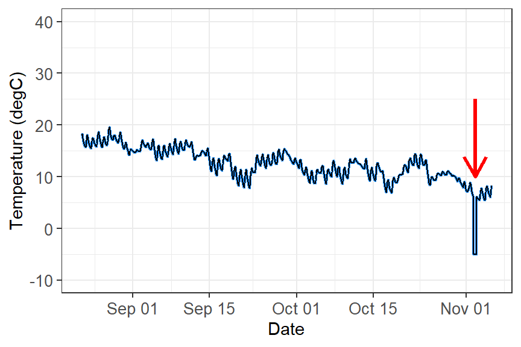
What do you do with these data?
These data need to filtered out of your dataset in order to perform any kind of analyses. The way you filter data will be based on the type of data you are working with and how the data manifests. For example:
Filter out outliers by a redefined threshold. This example you can filter out values below zero.
Filter out outliers based on the IQR range. See week 1’s workshop for how to filter data using this method.
Filter out outliers based on the time. If you know a certain time period that damaged the equipment (i.e storm event), you can filter out by time.
Analysis
You are now ready to analyse time-series data. However, time-series analysis is beyond this second-year unit, but here are some possibilities you can you do with time data:
Repeated measures ANOVA: A normal ANOVA but the same individual/group measured multiple times (longitudinal studies) or before/after treatments.
Population dynamics: You can quantify changes in populations or number of individuals across time using using generalised linear models or generalised additive models for nonlinear effects. Some simple forecasting tool can identify trend, seasonality (breeding seasons, migration, lunar cycles, predator/prey dynamics), cycles, irregular trends, and predict future numbers.
Forecasting: More advanced forescasting models can deal with temporal autocorrelation, lagged effects, non-Gaussian data and missing observations, measurement, error, time-varying effects, non-linearities, and multi-series clustering. Some common time-series models that incorporates uncertainty in forecasting (i.e stochastic processes) includes include random walk, autoregressive, autoregressive integrated moving average, and exponential smoothing. Here is an example live forecast for the population and community dyanmics of desert rodents.
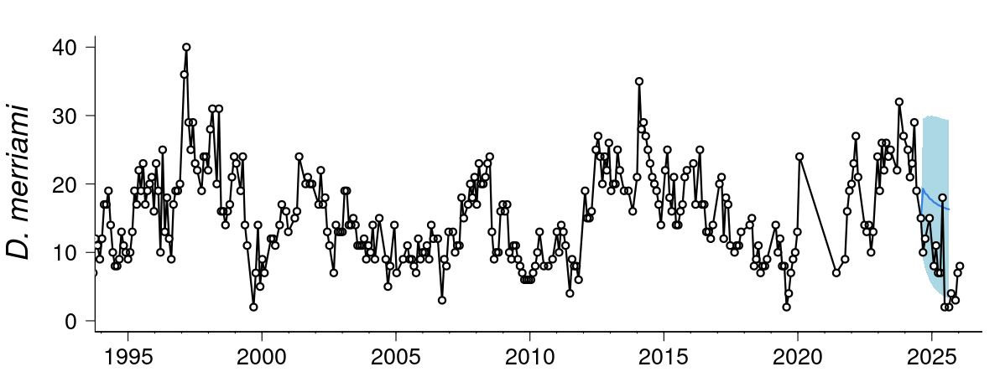
- Movement ecology: Temporal and spatial data from tracking animals can help influence where animals move, how fast they move, if there daily/seasonal patterns in their movement, what kind kind of habitats do they move in, and what bahavioural states can be inferred from the data.
Additional resource
- Coding Club Analysing Time Series Data: An R tutorial to understand the various temporal patterns in data by decomposing data into different cyclic trends.